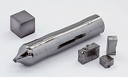

Tantalum
|  | |||||||||||||||||||||||||||||||||||||||||||||||||||||||||||||||||||||||||||||||||||||||||||||||||||||||||||||||||||||||||||||||||||||||||||||||||||||||||||||||||||||||||||||||||||||||||||||||||||||||||||||||||||||||||||||||||||||
|
Spectral lines of tantalum
|
|||||||||||||||||||||||||||||||||||||||||||||||||||||||||||||||||||||||||||||||||||||||||||||||||||||||||||||||||||||||||||||||||||||||||||||||||||||||||||||||||||||||||||||||||||||||||||||||||||||||||||||||||||||||||||||||||||||
| General properties | |||||||||||||||||||||||||||||||||||||||||||||||||||||||||||||||||||||||||||||||||||||||||||||||||||||||||||||||||||||||||||||||||||||||||||||||||||||||||||||||||||||||||||||||||||||||||||||||||||||||||||||||||||||||||||||||||||||
|---|---|---|---|---|---|---|---|---|---|---|---|---|---|---|---|---|---|---|---|---|---|---|---|---|---|---|---|---|---|---|---|---|---|---|---|---|---|---|---|---|---|---|---|---|---|---|---|---|---|---|---|---|---|---|---|---|---|---|---|---|---|---|---|---|---|---|---|---|---|---|---|---|---|---|---|---|---|---|---|---|---|---|---|---|---|---|---|---|---|---|---|---|---|---|---|---|---|---|---|---|---|---|---|---|---|---|---|---|---|---|---|---|---|---|---|---|---|---|---|---|---|---|---|---|---|---|---|---|---|---|---|---|---|---|---|---|---|---|---|---|---|---|---|---|---|---|---|---|---|---|---|---|---|---|---|---|---|---|---|---|---|---|---|---|---|---|---|---|---|---|---|---|---|---|---|---|---|---|---|---|---|---|---|---|---|---|---|---|---|---|---|---|---|---|---|---|---|---|---|---|---|---|---|---|---|---|---|---|---|---|---|---|---|---|---|---|---|---|---|---|---|---|---|---|---|---|---|---|---|
| Name, symbol | tantalum, Ta | ||||||||||||||||||||||||||||||||||||||||||||||||||||||||||||||||||||||||||||||||||||||||||||||||||||||||||||||||||||||||||||||||||||||||||||||||||||||||||||||||||||||||||||||||||||||||||||||||||||||||||||||||||||||||||||||||||||
| Pronunciation | /ˈtæntələm/ TAN-təl-əm previously: /tænˈtæliəm/ tan-TAL-ee-əm |
||||||||||||||||||||||||||||||||||||||||||||||||||||||||||||||||||||||||||||||||||||||||||||||||||||||||||||||||||||||||||||||||||||||||||||||||||||||||||||||||||||||||||||||||||||||||||||||||||||||||||||||||||||||||||||||||||||
| Appearance | gray blue | ||||||||||||||||||||||||||||||||||||||||||||||||||||||||||||||||||||||||||||||||||||||||||||||||||||||||||||||||||||||||||||||||||||||||||||||||||||||||||||||||||||||||||||||||||||||||||||||||||||||||||||||||||||||||||||||||||||
| Tantalum in the periodic table | |||||||||||||||||||||||||||||||||||||||||||||||||||||||||||||||||||||||||||||||||||||||||||||||||||||||||||||||||||||||||||||||||||||||||||||||||||||||||||||||||||||||||||||||||||||||||||||||||||||||||||||||||||||||||||||||||||||
|
|||||||||||||||||||||||||||||||||||||||||||||||||||||||||||||||||||||||||||||||||||||||||||||||||||||||||||||||||||||||||||||||||||||||||||||||||||||||||||||||||||||||||||||||||||||||||||||||||||||||||||||||||||||||||||||||||||||
| Atomic number | 73 | ||||||||||||||||||||||||||||||||||||||||||||||||||||||||||||||||||||||||||||||||||||||||||||||||||||||||||||||||||||||||||||||||||||||||||||||||||||||||||||||||||||||||||||||||||||||||||||||||||||||||||||||||||||||||||||||||||||
| Standard atomic weight (±) | 180.94788(2)[1] | ||||||||||||||||||||||||||||||||||||||||||||||||||||||||||||||||||||||||||||||||||||||||||||||||||||||||||||||||||||||||||||||||||||||||||||||||||||||||||||||||||||||||||||||||||||||||||||||||||||||||||||||||||||||||||||||||||||
| Element category | transition metal | ||||||||||||||||||||||||||||||||||||||||||||||||||||||||||||||||||||||||||||||||||||||||||||||||||||||||||||||||||||||||||||||||||||||||||||||||||||||||||||||||||||||||||||||||||||||||||||||||||||||||||||||||||||||||||||||||||||
| Group, block | group 5, d-block | ||||||||||||||||||||||||||||||||||||||||||||||||||||||||||||||||||||||||||||||||||||||||||||||||||||||||||||||||||||||||||||||||||||||||||||||||||||||||||||||||||||||||||||||||||||||||||||||||||||||||||||||||||||||||||||||||||||
| Period | period 6 | ||||||||||||||||||||||||||||||||||||||||||||||||||||||||||||||||||||||||||||||||||||||||||||||||||||||||||||||||||||||||||||||||||||||||||||||||||||||||||||||||||||||||||||||||||||||||||||||||||||||||||||||||||||||||||||||||||||
| Electron configuration | [Xe] 4f14 5d3 6s2 | ||||||||||||||||||||||||||||||||||||||||||||||||||||||||||||||||||||||||||||||||||||||||||||||||||||||||||||||||||||||||||||||||||||||||||||||||||||||||||||||||||||||||||||||||||||||||||||||||||||||||||||||||||||||||||||||||||||
| per shell | 2, 8, 18, 32, 11, 2 | ||||||||||||||||||||||||||||||||||||||||||||||||||||||||||||||||||||||||||||||||||||||||||||||||||||||||||||||||||||||||||||||||||||||||||||||||||||||||||||||||||||||||||||||||||||||||||||||||||||||||||||||||||||||||||||||||||||
| Physical properties | |||||||||||||||||||||||||||||||||||||||||||||||||||||||||||||||||||||||||||||||||||||||||||||||||||||||||||||||||||||||||||||||||||||||||||||||||||||||||||||||||||||||||||||||||||||||||||||||||||||||||||||||||||||||||||||||||||||
| Phase | solid | ||||||||||||||||||||||||||||||||||||||||||||||||||||||||||||||||||||||||||||||||||||||||||||||||||||||||||||||||||||||||||||||||||||||||||||||||||||||||||||||||||||||||||||||||||||||||||||||||||||||||||||||||||||||||||||||||||||
| Melting point | 3290 K (3017 °C, 5463 °F) | ||||||||||||||||||||||||||||||||||||||||||||||||||||||||||||||||||||||||||||||||||||||||||||||||||||||||||||||||||||||||||||||||||||||||||||||||||||||||||||||||||||||||||||||||||||||||||||||||||||||||||||||||||||||||||||||||||||
| Boiling point | 5731 K (5458 °C, 9856 °F) | ||||||||||||||||||||||||||||||||||||||||||||||||||||||||||||||||||||||||||||||||||||||||||||||||||||||||||||||||||||||||||||||||||||||||||||||||||||||||||||||||||||||||||||||||||||||||||||||||||||||||||||||||||||||||||||||||||||
| Density near r.t. | 16.69 g·cm−3 | ||||||||||||||||||||||||||||||||||||||||||||||||||||||||||||||||||||||||||||||||||||||||||||||||||||||||||||||||||||||||||||||||||||||||||||||||||||||||||||||||||||||||||||||||||||||||||||||||||||||||||||||||||||||||||||||||||||
| when liquid, at m.p. | 15 g·cm−3 | ||||||||||||||||||||||||||||||||||||||||||||||||||||||||||||||||||||||||||||||||||||||||||||||||||||||||||||||||||||||||||||||||||||||||||||||||||||||||||||||||||||||||||||||||||||||||||||||||||||||||||||||||||||||||||||||||||||
| Heat of fusion | 36.57 kJ·mol−1 | ||||||||||||||||||||||||||||||||||||||||||||||||||||||||||||||||||||||||||||||||||||||||||||||||||||||||||||||||||||||||||||||||||||||||||||||||||||||||||||||||||||||||||||||||||||||||||||||||||||||||||||||||||||||||||||||||||||
| Heat of vaporization | 753 kJ·mol−1 | ||||||||||||||||||||||||||||||||||||||||||||||||||||||||||||||||||||||||||||||||||||||||||||||||||||||||||||||||||||||||||||||||||||||||||||||||||||||||||||||||||||||||||||||||||||||||||||||||||||||||||||||||||||||||||||||||||||
| Molar heat capacity | 25.36 J·mol−1·K−1 | ||||||||||||||||||||||||||||||||||||||||||||||||||||||||||||||||||||||||||||||||||||||||||||||||||||||||||||||||||||||||||||||||||||||||||||||||||||||||||||||||||||||||||||||||||||||||||||||||||||||||||||||||||||||||||||||||||||
vapor pressure
|
|||||||||||||||||||||||||||||||||||||||||||||||||||||||||||||||||||||||||||||||||||||||||||||||||||||||||||||||||||||||||||||||||||||||||||||||||||||||||||||||||||||||||||||||||||||||||||||||||||||||||||||||||||||||||||||||||||||
| Atomic properties | |||||||||||||||||||||||||||||||||||||||||||||||||||||||||||||||||||||||||||||||||||||||||||||||||||||||||||||||||||||||||||||||||||||||||||||||||||||||||||||||||||||||||||||||||||||||||||||||||||||||||||||||||||||||||||||||||||||
| Oxidation states | 5, 4, 3, 2, −1 (a mildly acidic oxide) | ||||||||||||||||||||||||||||||||||||||||||||||||||||||||||||||||||||||||||||||||||||||||||||||||||||||||||||||||||||||||||||||||||||||||||||||||||||||||||||||||||||||||||||||||||||||||||||||||||||||||||||||||||||||||||||||||||||
| Electronegativity | Pauling scale: 1.5 | ||||||||||||||||||||||||||||||||||||||||||||||||||||||||||||||||||||||||||||||||||||||||||||||||||||||||||||||||||||||||||||||||||||||||||||||||||||||||||||||||||||||||||||||||||||||||||||||||||||||||||||||||||||||||||||||||||||
| Ionization energies | 1st: 761 kJ·mol−1 2nd: 1500 kJ·mol−1 |
||||||||||||||||||||||||||||||||||||||||||||||||||||||||||||||||||||||||||||||||||||||||||||||||||||||||||||||||||||||||||||||||||||||||||||||||||||||||||||||||||||||||||||||||||||||||||||||||||||||||||||||||||||||||||||||||||||
| Atomic radius | empirical: 146 pm | ||||||||||||||||||||||||||||||||||||||||||||||||||||||||||||||||||||||||||||||||||||||||||||||||||||||||||||||||||||||||||||||||||||||||||||||||||||||||||||||||||||||||||||||||||||||||||||||||||||||||||||||||||||||||||||||||||||
| Covalent radius | 170±8 pm | ||||||||||||||||||||||||||||||||||||||||||||||||||||||||||||||||||||||||||||||||||||||||||||||||||||||||||||||||||||||||||||||||||||||||||||||||||||||||||||||||||||||||||||||||||||||||||||||||||||||||||||||||||||||||||||||||||||
| Miscellanea | |||||||||||||||||||||||||||||||||||||||||||||||||||||||||||||||||||||||||||||||||||||||||||||||||||||||||||||||||||||||||||||||||||||||||||||||||||||||||||||||||||||||||||||||||||||||||||||||||||||||||||||||||||||||||||||||||||||
| Crystal structure | body-centered cubic (bcc)[2]
 α-Ta |
||||||||||||||||||||||||||||||||||||||||||||||||||||||||||||||||||||||||||||||||||||||||||||||||||||||||||||||||||||||||||||||||||||||||||||||||||||||||||||||||||||||||||||||||||||||||||||||||||||||||||||||||||||||||||||||||||||
| Crystal structure | tetragonal[2]
 β-Ta |
||||||||||||||||||||||||||||||||||||||||||||||||||||||||||||||||||||||||||||||||||||||||||||||||||||||||||||||||||||||||||||||||||||||||||||||||||||||||||||||||||||||||||||||||||||||||||||||||||||||||||||||||||||||||||||||||||||
| Speed of sound thin rod | 3400 m·s−1 (at 20 °C) | ||||||||||||||||||||||||||||||||||||||||||||||||||||||||||||||||||||||||||||||||||||||||||||||||||||||||||||||||||||||||||||||||||||||||||||||||||||||||||||||||||||||||||||||||||||||||||||||||||||||||||||||||||||||||||||||||||||
| Thermal expansion | 6.3 µm·m−1·K−1 (at 25 °C) | ||||||||||||||||||||||||||||||||||||||||||||||||||||||||||||||||||||||||||||||||||||||||||||||||||||||||||||||||||||||||||||||||||||||||||||||||||||||||||||||||||||||||||||||||||||||||||||||||||||||||||||||||||||||||||||||||||||
| Thermal conductivity | 57.5 W·m−1·K−1 | ||||||||||||||||||||||||||||||||||||||||||||||||||||||||||||||||||||||||||||||||||||||||||||||||||||||||||||||||||||||||||||||||||||||||||||||||||||||||||||||||||||||||||||||||||||||||||||||||||||||||||||||||||||||||||||||||||||
| Electrical resistivity | 131 nΩ·m (at 20 °C) | ||||||||||||||||||||||||||||||||||||||||||||||||||||||||||||||||||||||||||||||||||||||||||||||||||||||||||||||||||||||||||||||||||||||||||||||||||||||||||||||||||||||||||||||||||||||||||||||||||||||||||||||||||||||||||||||||||||
| Magnetic ordering | paramagnetic[3] | ||||||||||||||||||||||||||||||||||||||||||||||||||||||||||||||||||||||||||||||||||||||||||||||||||||||||||||||||||||||||||||||||||||||||||||||||||||||||||||||||||||||||||||||||||||||||||||||||||||||||||||||||||||||||||||||||||||
| Young's modulus | 186 GPa | ||||||||||||||||||||||||||||||||||||||||||||||||||||||||||||||||||||||||||||||||||||||||||||||||||||||||||||||||||||||||||||||||||||||||||||||||||||||||||||||||||||||||||||||||||||||||||||||||||||||||||||||||||||||||||||||||||||
| Shear modulus | 69 GPa | ||||||||||||||||||||||||||||||||||||||||||||||||||||||||||||||||||||||||||||||||||||||||||||||||||||||||||||||||||||||||||||||||||||||||||||||||||||||||||||||||||||||||||||||||||||||||||||||||||||||||||||||||||||||||||||||||||||
| Bulk modulus | 200 GPa | ||||||||||||||||||||||||||||||||||||||||||||||||||||||||||||||||||||||||||||||||||||||||||||||||||||||||||||||||||||||||||||||||||||||||||||||||||||||||||||||||||||||||||||||||||||||||||||||||||||||||||||||||||||||||||||||||||||
| Poisson ratio | 0.34 | ||||||||||||||||||||||||||||||||||||||||||||||||||||||||||||||||||||||||||||||||||||||||||||||||||||||||||||||||||||||||||||||||||||||||||||||||||||||||||||||||||||||||||||||||||||||||||||||||||||||||||||||||||||||||||||||||||||
| Mohs hardness | 6.5 | ||||||||||||||||||||||||||||||||||||||||||||||||||||||||||||||||||||||||||||||||||||||||||||||||||||||||||||||||||||||||||||||||||||||||||||||||||||||||||||||||||||||||||||||||||||||||||||||||||||||||||||||||||||||||||||||||||||
| Vickers hardness | 870–1200 MPa | ||||||||||||||||||||||||||||||||||||||||||||||||||||||||||||||||||||||||||||||||||||||||||||||||||||||||||||||||||||||||||||||||||||||||||||||||||||||||||||||||||||||||||||||||||||||||||||||||||||||||||||||||||||||||||||||||||||
| Brinell hardness | 440-3430 MPa | ||||||||||||||||||||||||||||||||||||||||||||||||||||||||||||||||||||||||||||||||||||||||||||||||||||||||||||||||||||||||||||||||||||||||||||||||||||||||||||||||||||||||||||||||||||||||||||||||||||||||||||||||||||||||||||||||||||
| CAS Registry Number | 7440-25-7 | ||||||||||||||||||||||||||||||||||||||||||||||||||||||||||||||||||||||||||||||||||||||||||||||||||||||||||||||||||||||||||||||||||||||||||||||||||||||||||||||||||||||||||||||||||||||||||||||||||||||||||||||||||||||||||||||||||||
| History | |||||||||||||||||||||||||||||||||||||||||||||||||||||||||||||||||||||||||||||||||||||||||||||||||||||||||||||||||||||||||||||||||||||||||||||||||||||||||||||||||||||||||||||||||||||||||||||||||||||||||||||||||||||||||||||||||||||
| Discovery | Anders Gustaf Ekeberg (1802) | ||||||||||||||||||||||||||||||||||||||||||||||||||||||||||||||||||||||||||||||||||||||||||||||||||||||||||||||||||||||||||||||||||||||||||||||||||||||||||||||||||||||||||||||||||||||||||||||||||||||||||||||||||||||||||||||||||||
| Recognized as a distinct element by | Heinrich Rose (1844) | ||||||||||||||||||||||||||||||||||||||||||||||||||||||||||||||||||||||||||||||||||||||||||||||||||||||||||||||||||||||||||||||||||||||||||||||||||||||||||||||||||||||||||||||||||||||||||||||||||||||||||||||||||||||||||||||||||||
| Most stable isotopes | |||||||||||||||||||||||||||||||||||||||||||||||||||||||||||||||||||||||||||||||||||||||||||||||||||||||||||||||||||||||||||||||||||||||||||||||||||||||||||||||||||||||||||||||||||||||||||||||||||||||||||||||||||||||||||||||||||||
|
|||||||||||||||||||||||||||||||||||||||||||||||||||||||||||||||||||||||||||||||||||||||||||||||||||||||||||||||||||||||||||||||||||||||||||||||||||||||||||||||||||||||||||||||||||||||||||||||||||||||||||||||||||||||||||||||||||||
| Decay modes in parentheses are predicted, but have not yet been observed | |||||||||||||||||||||||||||||||||||||||||||||||||||||||||||||||||||||||||||||||||||||||||||||||||||||||||||||||||||||||||||||||||||||||||||||||||||||||||||||||||||||||||||||||||||||||||||||||||||||||||||||||||||||||||||||||||||||
{kind=link}
{kind=link}
Tantalum is a chemical element with symbol Ta and atomic number 73. Previously known as tantalium, its name comes from Tantalus, a hero from Greek mythology.[4] Tantalum is a rare, hard, blue-gray, lustrous transition metal that is highly corrosion-resistant. It is part of the refractory metals group, which are widely used as minor components in alloys. The chemical inertness of tantalum makes it a valuable substance for laboratory equipment and a substitute for platinum. Tantalum is also used for medical implants and bone repair.[5] Its main use today is in tantalum capacitors in electronic equipment such as mobile phones, DVD players, video game systems and computers. Tantalum, always together with the chemically similar niobium, occurs in the minerals tantalite, columbite and coltan (a mix of columbite and tantalite). Tantalum is a rare metal, comprising just 8×10−9% of the universe, making it fifteen times less abundant in the universe than gold (which makes up 6×10−8%).[6] Tantalum also comprises just 1.5×10−4% of the earth's crust, making it more abundant than other metals in the sixth period, such as rhenium (abundance 2.6×10−7%), osmium (abundance 1.8×10−7%), or iridium (abundance 4×10−8%), but not as abundant as barium (abundance 3.4×10−2%).[7]
Contents
[hide]History[edit]
Tantalum was discovered in Sweden in 1802 by Anders Ekeberg. One year earlier, Charles Hatchett had discovered the element columbium.[8] In 1809, the English chemist William Hyde Wollaston compared the oxides derived from both columbium—columbite, with a density 5.918 g/cm3, and tantalum—tantalite, with a density 7.935 g/cm3, and concluded that the two oxides, despite their difference in measured density, were identical. He decided to keep the name tantalum.[9] After Friedrich Wöhler confirmed these results, it was thought that columbium and tantalum were the same element. This conclusion was disputed in 1846 by the German chemist Heinrich Rose, who argued that there were two additional elements in the tantalite sample, and he named them after the children of Tantalus: niobium (from Niobe, the goddess of tears), and pelopium (from Pelops).[10][11] The supposed element "pelopium" was later identified as a mixture of tantalum and niobium, and it was found that the niobium was identical to the columbium already discovered in 1801 by Hatchett.
The differences between tantalum and niobium were demonstrated unequivocally in 1864 by Christian Wilhelm Blomstrand,[12] and Henri Etienne Sainte-Claire Deville, as well as by Louis J. Troost, who determined the empirical formulas of some of their compounds in 1865.[12][13] Further confirmation came from the Swiss chemist Jean Charles Galissard de Marignac,[14] in 1866, who proved that there were only two elements. These discoveries did not stop scientists from publishing articles about the so-called ilmenium until 1871.[15] De Marignac was the first to produce the metallic form of tantalum in 1864, when he reduced tantalum chloride by heating it in an atmosphere of hydrogen.[16] Early investigators had only been able to produce impure tantalum, and the first relatively pure ductile metal was produced by Werner von Bolton in 1903. Wires made with metallic tantalum were used for light bulb filaments until tungsten replaced it in widespread use.[17]
The name tantalum was derived from the name of the mythological Tantalus, the father of Niobe in Greek mythology. In the story, he had been punished after death by being condemned to stand knee-deep in water with perfect fruit growing above his head, both of which eternally tantalized him. (If he bent to drink the water, it drained below the level he could reach, and if he reached for the fruit, the branches moved out of his grasp.)[18] Ekeberg wrote "This metal I call tantalum ... partly in allusion to its incapacity, when immersed in acid, to absorb any and be saturated."[19]
For decades, the commercial technology for separating tantalum from niobium involved the fractional crystallization of potassium heptafluorotantalate away from potassium oxypentafluoroniobate monohydrate, a process that was discovered by Jean Charles Galissard de Marignac in 1866. This method has been supplanted by solvent extraction from fluoride-containing solutions of tantalum.[13]
Characteristics[edit]
Physical properties[edit]
Tantalum is dark (blue-gray),[20] dense, ductile, very hard, easily fabricated, and highly conductive of heat and electricity. The metal is renowned for its resistance to corrosion by acids; in fact, at temperatures below 150 °C tantalum is almost completely immune to attack by the normally aggressive aqua regia. It can be dissolved with hydrofluoric acid or acidic solutions containing the fluoride ion and sulfur trioxide, as well as with a solution of potassium hydroxide. Tantalum's high melting point of 3017 °C (boiling point 5458 °C) is exceeded only by tungsten, rhenium and osmium for metals, and carbon.
Tantalum exists in two crystalline phases, alpha and beta. The alpha phase is relatively ductile and soft; it has body-centered cubic structure (space group Im3m, lattice constant a = 0.33058 nm), Knoop hardness 200–400 HN and electrical resistivity 15–60 µΩּcm. The beta phase is hard and brittle; its crystal symmetry is tetragonal (space group P42/mnm, a = 1.0194 nm, c = 0.5313 nm), Knoop hardness is 1000–1300 HN and electrical resistivity is relatively high at 170–210 µΩּcm. The beta phase is metastable and converts to the alpha phase upon heating to 750–775 °C. Bulk tantalum is almost entirely alpha phase, and the beta phase usually exists as thin films obtained by magnetron sputtering, chemical vapor deposition or electrochemical deposition from an eutectic molten salt solution.[21]
Chemical properties[edit]
Tantalum forms oxides with the oxidation states +5 (Ta2O5) and +4 (TaO2).[22] The most stable oxidation state is +5, as seen in tantalum pentoxide.[22]
Tantalum pentoxide is the starting material for several tantalum
compounds. The compounds are created by dissolving the pentoxide in basic hydroxide solutions or by melting it in another metal oxide. Such examples are lithium tantalate (LiTaO3) and lanthanum tantalate (LaTaO4). In the lithium tantalate, the tantalate ion TaO−
3 does not occur; instead, this part of the formula represents linkage of TaO7−
6 octahedra to form a three-dimensional perovskite framework; while the lanthanum tantalate contains lone TaO3−
4 tetrahedral groups.[22]
The fluorides of tantalum can be used for its separation from niobium.[23] Tantalum forms halogen compounds in the oxidation states of +5, +4, and +3 of the type TaX
5, TaX
4, and TaX
3, although multi-core complexes and substoichiometric compounds are also known.[22][24] Tantalum pentafluoride (TaF5) is a white solid with a melting point of 97.0 °C and tantalum pentachloride (TaCl5) is a white solid with a melting point of 247.4 °C. Tantalum pentachloride is hydrolyzed by water and reacts with additional tantalum at elevated temperatures by forming the black and highly hygroscopic tantalum tetrachloride (TaCl4). While the trihalides can be obtained by reduction of the pentahalides with hydrogen, the dihalides do not exist.[22] A tantalum-tellurium alloy forms quasicrystals.[22] Tantalum compounds with oxidation states as low as −1 have been reported in 2008.[25] As in the cases of most other refractory metals, the hardest known compounds of tantalum are its stable nitrides and carbides. Tantalum carbide, TaC, like the more commonly used tungsten carbide,
is a very hard ceramic that is used in cutting tools. Tantalum(III)
nitride is used as a thin film insulator in some microelectronic
fabrication processes.[26] Chemists at the Los Alamos National Laboratory in the United States have developed a tantalum carbide-graphite
composite material that is one of the hardest materials ever
synthesized. Korean researchers have developed an amorphous
tantalum-tungsten-copper alloy that is more flexible and two to three
times stronger than commonly used steel alloys.[27] There are two tantalum aluminides, TaAl3 and Ta3Al. These are stable, refractory, and reflective, and they have been proposed[28] as coatings for use in infrared wave mirrors.
Isotopes[edit]
Natural tantalum consists of two isotopes: 180mTa (0.012%) and 181Ta (99.988%). 181Ta is a stable isotope. 180mTa (m denotes a metastable state) is predicted to decay in three ways: isomeric transition to the ground state of 180Ta, beta decay to 180W, or electron capture to 180Hf. However, radioactivity of this nuclear isomer has never been observed, and only a lower limit on its half life of 2.0 × 1016 years has been set.[29] The ground state of 180Ta has a half life of only 8 hours. 180mTa is the only naturally occurring nuclear isomer (excluding radiogenic and cosmogenic short-living nuclides). It is also the rarest isotope in the Universe, taking into account the elemental abundance of tantalum and isotopic abundance of 180mTa in the natural mixture of isotopes (and again excluding radiogenic and cosmogenic short-living nuclides).[30]
Tantalum has been examined theoretically as a "salting" material for nuclear weapons (cobalt is the better-known hypothetical salting material). An external shell of 181Ta would be irradiated by the intensive high-energy neutron flux from a hypothetical exploding nuclear weapon. This would transmute the tantalum into the radioactive isotope 182Ta, which has a half-life of 114.4 days and produces gamma rays with approximately 1.12 million electron-volts (MeV) of energy apiece, which would significantly increase the radioactivity of the nuclear fallout from the explosion for several months. Such "salted" weapons have never been built or tested, as far as is publicly known, and certainly never used as weapons.[31]
Tantalum can be used as a target material for accelerated proton beams for the production of various short-lived isotopes including 8Li, 80Rb, and 160Yb.[32]
Occurrence[edit]
{kind=link}
Tantalum is estimated to make up about 1 ppm[33] or 2 ppm[24] of the Earth's crust by weight. There are many species of tantalum minerals, only some of which are so far being used by industry as raw materials: tantalite, microlite, wodginite, euxenite, polycrase. Tantalite (Fe, Mn)Ta2O6 is the most important mineral for tantalum extraction. Tantalite has the same mineral structure as columbite (Fe, Mn) (Ta, Nb)2O6; when there is more tantalum than niobium it is called tantalite and when there is more niobium than tantalum is it called columbite (or niobite). The high density of tantalite and other tantalum containing minerals makes the use of gravitational separation the best method. Other minerals include samarskite and fergusonite.
The primary mining of tantalum is in Australia, where the largest producer, Global Advanced Metals, formerly known as Talison Minerals, operates two mines in Western Australia, Greenbushes in the Southwest and Wodgina in the Pilbara region. The Wodgina mine was reopened in January 2011 after mining at the site was suspended in late-2008 due to the global financial crisis.[34] Less than a year after it reopened, Global Advanced Metals announced that due to again "... softening tantalum demand ...", and other factors, tantalum mining operations were to cease at the end of February 2012.[35] Wodgina produces a primary tantalum concentrate which is further upgraded at the Greenbushes operation before being sold to customers.[36] Whereas the large-scale producers of niobium are in Brazil and Canada, the ore there also yields a small percentage of tantalum. Some other countries such as China, Ethiopia, and Mozambique mine ores with a higher percentage of tantalum, and they produce a significant percentage of the world's output of it. Tantalum is also produced in Thailand and Malaysia as a by-product of the tin mining there. During gravitational separation of the ores from placer deposits, not only is Cassiterite (SnO2) found, but a small percentage of tantalite also included. The slag from the tin smelters then contains economically useful amounts of tantalum, which is leached from the slag.[13][37] Future sources of supply of tantalum, in order of estimated size, are being explored in Saudi Arabia, Egypt, Greenland, China, Mozambique, Canada, Australia, the United States, Finland, and Brazil.[38][39]
It is estimated that there are less than 50 years left of tantalum resources, based on extraction at current rates, demonstrating the need for increased recycling.[40]
Status as a conflict resource[edit]
Tantalum is considered a conflict resource. Coltan, the industrial name for a columbite–tantalite mineral from which columbium (i.e. niobium) and tantalum are extracted,[41] can also be found in Central Africa, which is why tantalum is being linked to warfare in the Democratic Republic of the Congo (formerly Zaire). According to an October 23, 2003 United Nations report,[42] the smuggling and exportation of coltan has helped fuel the war in the Congo, a crisis that has resulted in approximately 5.4 million deaths since 1998[43] – making it the world’s deadliest documented conflict since World War II. Ethical questions have been raised about responsible corporate behavior, human rights, and endangering wildlife, due to the exploitation of resources such as coltan in the armed conflict regions of the Congo Basin.[44][45][46][47] However, although important for the local economy in Congo, the contribution of coltan mining in Congo to the world supply of tantalum is usually small. The United States Geological Survey reports in its yearbook that this region produced a little less than 1% of the world's tantalum output in 2002–2006, peaking at 10% in 2000 and 2008.[37]
The stated aim of the Solutions for Hope Tantalum Project is to "source conflict-free tantalum from the Democratic Republic of Congo"[48]
Production and fabrication[edit]
{kind=link}
Several steps are involved in the extraction of tantalum from tantalite. First, the mineral is crushed and concentrated by gravity separation. This is generally carried out near the mine site.
Chemical refining[edit]
Tantalum ores often contain significant amounts of niobium, which is itself a valuable metal. As such, both metals are extracted so that they may be sold. The overall process is one of hydrometallurgy. A large number of chemical treatment procedures for the breakdown of primary sources have been developed. Some of these have been adopted for commercial production while others have been tested on a fairly large scale. There are yet a few others that have been tested only on a laboratory scale. All these processes can essentially be divided into reduction to metallic or compound form (via aluminothermic or carbothermic reduction reactions), chlorination, alkaline fusion and acid dissolution.[50]
Extraction begins with a leaching, a step in which the ore is treated with hydrofluoric acid and sulfuric acid to produce water soluble hydrogen fluorides. This allows the metals to be separated from the various non-metallic impurities in the rock.
- Ta2O5 + 14 HF → 2 H2[TaF7] + 5 H2O
- Nb2O5 + 10 HF → 2 H2[NbOF5] + 3 H2O
The tantalum and niobium hydrogen fluorides are then removed from the aqueous solution by liquid-liquid extraction using organic solvents, such as cyclohexanone or methyl isobutyl ketone. This step allows the simple removal of various metal impurities (e.g. iron, manganese, titanitum, zirconium) which remain in the aqueous phase in the form of fluorides. Separation of the tantalum and niobium is then achieved by pH adjustment. Niobium requires a higher level of acidity to remain soluble in the organic phase and can hence be selectively removed by extraction into less acidic water. The pure tantalum hydrogen fluoride solution is then neutralised with aqueous ammonia to give tantalum hydroxide (Ta(OH)5), which is calcinated to tantalum pentoxide (Ta2O5).[51]
The hydrogen fluoride can also be treated with potassium fluoride to produce potassium heptafluorotantalate (K2[TaF7])
This is used to produce metallic tantalum by reduction with sodium, at approximately 800 °C in molten salt.[52]
In an older method, called the Marignac process, the tantalum and niobium were separated by treating the initial aqueous mixture of hydrogen fluorides with potassium fluoride:
The resulting niobium and tantalum potassium-fluorides (K2[TaF7], K2[NbOF5]) could then be separated by fractional crystallization, due to their different water solubiliies.
Electrolysis[edit]
Electrolysis using a modified version of the Hall–Héroult process. Instead of requiring the input oxide and output metal to be in liquid form, tantalum electrolysis operates on non-liquid powdered oxides. The initial discovery came in 1997 when Cambridge University researchers immersed small samples of certain oxides in baths of molten salt and reduced the oxide with electric current. The cathode uses powdered metal oxide. The anode is made of carbon. The molten salt at 1,000 °C (1,830 °F) is the electrolyte. The first refinery has enough capacity to supply 3-4% of annual global demand.[53]
Fabrication and metalworking[edit]
All welding of tantalum must be done in an inert atmosphere of argon or helium in order to shield it from contamination with atmospheric gases. Tantalum is not solderable. Grinding tantalum is difficult, especially so for annealed tantalum. In the annealed condition, tantalum is extremely ductile and can be readily formed as metal sheets.[54]
Applications[edit]
Electronics[edit]
{kind=link}
The major use for tantalum, as the metal powder, is in the production of electronic components, mainly capacitors and some high-power resistors. Tantalum electrolytic capacitors exploit the tendency of tantalum to form a protective oxide surface layer, using tantalum powder, pressed into a pellet shape, as one "plate" of the capacitor, the oxide as the dielectric, and an electrolytic solution or conductive solid as the other "plate". Because the dielectric layer can be very thin (thinner than the similar layer in, for instance, an aluminium electrolytic capacitor), a high capacitance can be achieved in a small volume. Because of the size and weight advantages, tantalum capacitors are attractive for portable telephones, personal computers, and automotive electronics.[55]
Alloys[edit]
Tantalum is also used to produce a variety of alloys that have high melting points, strength, and ductility. Alloyed with other metals, it is also used in making carbide tools for metalworking equipment and in the production of superalloys for jet engine components, chemical process equipment, nuclear reactors, and missile parts.[55][56] Because of its ductility, tantalum can be drawn into fine wires or filaments, which are used for evaporating metals such as aluminium. Since it resists attack by body fluids and is nonirritating, tantalum is widely used in making surgical instruments and implants. For example, porous tantalum coatings are used in the construction of orthopedic implants due to tantalum's ability to form a direct bond to hard tissue.[57]
Tantalum is inert against most acids except hydrofluoric acid and hot sulfuric acid, and hot alkaline solutions also cause tantalum to corrode. This property makes it an ideal metal for chemical reaction vessels and pipes for corrosive liquids. Heat exchanging coils for the steam heating of hydrochloric acid are made from tantalum.[58] Tantalum was extensively used in the production of ultra high frequency electron tubes for radio transmitters. The tantalum is capable of capturing oxygen and nitrogen by forming nitrides and oxides and therefore helps to sustain the high vacuum needed for the tubes.[23][58]
Other uses[edit]
The high melting point and oxidation resistance lead to the use of the metal in the production of vacuum furnace parts. Tantalum is extremely inert and is therefore formed into a variety of corrosion resistant parts, such as thermowells, valve bodies, and tantalum fasteners. Due to its high density, shaped charge and explosively formed penetrator liners have been constructed from tantalum.[59] Tantalum greatly increases the armor penetration capabilities of a shaped charge due to its high density and high melting point.[60][61] It is also occasionally used in precious watches e.g. from Audemars Piguet, Hublot, Montblanc, Omega, and Panerai. Tantalum is also highly bioinert and is used as an orthopedic implant material.[62] The high stiffness of tantalum makes it necessary to use it as highly porous foam or scaffold with lower stiffness for hip replacement implants to avoid stress shielding.[63] Because tantalum is a non-ferrous, non-magnetic metal, these implants are considered to be acceptable for patients undergoing MRI procedures.[64] The oxide is used to make special high refractive index glass for camera lenses.[65]
Precautions[edit]
|
|
This article may be confusing or unclear to readers. (August 2012) |
Compounds containing tantalum are rarely encountered in the laboratory. The metal is highly biocompatible[62] and is used for body implants and coatings, therefore attention may be focused on other elements or the physical nature of the chemical compound.[66] A single study[67] is the only reference in literature linking tantalum to local sarcomas. The study was quoted in IARC Monograph vol. 74 which includes the following "Note to the reader": "Inclusion of an agent in the Monographs does not imply that it is a carcinogen, only that the published data have been examined."[68]
References[edit]
- Jump up ^ Standard Atomic Weights 2013. Commission on Isotopic Abundances and Atomic Weights
- ^ Jump up to: a b Moseley, P. T.; Seabrook, C. J. (1973). "The crystal structure of β-tantalum". Acta Crystallographica Section B Structural Crystallography and Crystal Chemistry 29 (5): 1170–1171. doi:10.1107/S0567740873004140.
- Jump up ^ Lide, D. R., ed. (2005). "Magnetic susceptibility of the elements and inorganic compounds". CRC Handbook of Chemistry and Physics (PDF) (86th ed.). Boca Raton (FL): CRC Press. ISBN 0-8493-0486-5.
- Jump up ^ Euripides, Orestes
- Jump up ^ http://www.ncbi.nlm.nih.gov/pmc/articles/PMC3491782/ Porous Tantalum
- Jump up ^ http://www.ptable.com/#Property/Abundance/Universe
- Jump up ^ http://www.ptable.com/#Property/Abundance/Crust
- Jump up ^ Griffith, William P.; Morris, Peter J. T. (2003). "Charles Hatchett FRS (1765–1847), Chemist and Discoverer of Niobium". Notes and Records of the Royal Society of London 57 (3): 299. doi:10.1098/rsnr.2003.0216. JSTOR 3557720.
- Jump up ^ Wollaston, William Hyde (1809). "On the Identity of Columbium and Tantalum". Philosophical Transactions of the Royal Society of London 99: 246–252. doi:10.1098/rstl.1809.0017. JSTOR 107264.
- Jump up ^ Rose, Heinrich (1844). "Ueber die Zusammensetzung der Tantalite und ein im Tantalite von Baiern enthaltenes neues Metall". Annalen der Physik (in German) 139 (10): 317–341. Bibcode:1844AnP...139..317R. doi:10.1002/andp.18441391006.
- Jump up ^ Rose, Heinrich (1847). "Ueber die Säure im Columbit von Nordamérika". Annalen der Physik (in German) 146 (4): 572–577. Bibcode:1847AnP...146..572R. doi:10.1002/andp.18471460410.
- ^ Jump up to: a b Marignac, Blomstrand; H. Deville; L. Troost & R. Hermann (1866). "Tantalsäure, Niobsäure, (Ilmensäure) und Titansäure". Fresenius' Journal of Analytical Chemistry 5 (1): 384–389. doi:10.1007/BF01302537.
- ^ Jump up to: a b c Gupta, C. K.; Suri, A. K. (1994). Extractive Metallurgy of Niobium. CRC Press. ISBN 0-8493-6071-4.
- Jump up ^ Marignac, M. C. (1866). "Recherches sur les combinaisons du niobium". Annales de chimie et de physique (in French) 4 (8): 7–75.
- Jump up ^ Hermann, R. (1871). "Fortgesetzte Untersuchungen über die Verbindungen von Ilmenium und Niobium, sowie über die Zusammensetzung der Niobmineralien (Further research about the compounds of ilmenium and niobium, as well as the composition of niobium minerals)". Journal für Praktische Chemie (in German) 3 (1): 373–427. doi:10.1002/prac.18710030137.
- Jump up ^ "Niobium". Universidade de Coimbra. Retrieved 2008-09-05.
- Jump up ^ Bowers, B. (2001). "Scanning Our Past from London The Filament Lamp and New Materials". Proceedings of the IEEE 89 (3): 413. doi:10.1109/5.915382.
- Jump up ^ Aycan, Sule (2005). "Chemistry Education and Mythology". Journal of Social Sciences 1 (4): 238–239. doi:10.3844/jssp.2005.238.239.
- Jump up ^ Greenwood, Norman N.; Earnshaw, Alan (1997). Chemistry of the Elements (2nd ed.). Butterworth-Heinemann. p. 1138. ISBN 0080379419.
- Jump up ^ Colakis, Marianthe; Masello, Mary Joan (2007-06-30). "Tantalum". Classical Mythology & More: A Reader Workbook. ISBN 978-0-86516-573-1.
- Jump up ^ Lee, S; Doxbeck, M.; Mueller, J.; Cipollo, M.; Cote, P. (2004). "Texture, structure and phase transformation in sputter beta tantalum coating". Surface and Coatings Technology. 177–178: 44. doi:10.1016/j.surfcoat.2003.06.008.
- ^ Jump up to: a b c d e f Holleman, A. F.; Wiberg, E.; Wiberg, N. (2007). Lehrbuch der Anorganischen Chemie (102nd ed.). de Gruyter. ISBN 978-3-11-017770-1.
- ^ Jump up to: a b Soisson, Donald J.; McLafferty, J. J.; Pierret, James A. (1961). "Staff-Industry Collaborative Report: Tantalum and Niobium". Ind. Eng. Chem. 53 (11): 861–868. doi:10.1021/ie50623a016.
- ^ Jump up to: a b Agulyansky, Anatoly (2004). The Chemistry of Tantalum and Niobium Fluoride Compounds. Elsevier. ISBN 978-0-444-51604-6. Retrieved 2008-09-02.
- Jump up ^ Morse, P. M. et al. (2008). "Ethylene Complexes of the Early Transition Metals: Crystal Structures of [HfEt
4(C
2H
4)2−
] and the Negative-Oxidation-State Species [TaHEt(C
2H
4)3−
3] and [WH(C
2H
4)3−
4]". Organometallics 27 (5): 984. doi:10.1021/om701189e. - Jump up ^ Tsukimoto, S.; Moriyama, M.; Murakami, Masanori (1961). "Microstructure of amorphous tantalum nitride thin films". Thin Solid Films 460 (1–2): 222–226. Bibcode:2004TSF...460..222T. doi:10.1016/j.tsf.2004.01.073.
- Jump up ^ Arirang, TV (2005-05-06). "Researchers Develop New Alloy". Digital Chosunilbo (English Edition) : Daily News in English About Korea. Archived from the original on March 28, 2008. Retrieved 2008-12-22.
- Jump up ^ Braun, Hilarion "Substance for front surface mirror" U.S. Patent 5,923,464, Issued on July 13, 1999
- Jump up ^ Hult, Mikael; Wieslander, J.S. Elisabeth; Marissens, Gerd; Gasparro, Joël; Wätjen, Uwe; Misiaszek, Marcin. "Search for the radioactivity of 180mTa using an underground HPGe sandwich spectrometer". Retrieved 23 September 2014.
- Jump up ^ Georges, Audi; Bersillon, O.; Blachot, J.; Wapstra, A.H. (2003). "The NUBASE Evaluation of Nuclear and Decay Properties". Nuclear Physics A (Atomic Mass Data Center) 729: 3–128. Bibcode:2003NuPhA.729....3A. doi:10.1016/j.nuclphysa.2003.11.001.
- Jump up ^ Win, David Tin; Al Masum, Mohammed (2003). "Weapons of Mass Destruction" (PDF). Assumption University Journal of Technology 6 (4): 199–219.
- Jump up ^ https://mis.triumf.ca/science/planning/yield/target/Ta
- Jump up ^ Emsley, John (2001). "Tantalum". Nature's Building Blocks: An A-Z Guide to the Elements. Oxford, England, UK: Oxford University Press. p. 420. ISBN 0-19-850340-7.
- Jump up ^ "Talison Tantalum eyes mid-2011 Wodgina restart 2010-06-09". Reuters. 2010-06-09. Retrieved 2010-08-27.
- Jump up ^ Emery, Kate (24 Jan 2012). "GAM closes Wodgina tantalum mine". The West Australian. Retrieved 20 March 2012.
Worldwide softening tantalum demand and delays in receiving Governmental approval for installation of necessary crushing equipment are among contributing factors in this decision
- Jump up ^ "Wodgina Operations". Global Advanced Metals. 2008. Retrieved 2011-03-28.
- ^ Jump up to: a b Papp, John F. (2006). "2006 Minerals Yearbook Nb & Ta". US Geological Survey. Retrieved 2008-06-03.
- Jump up ^ M. J. (November 2007). "Tantalum supplement" (PDF). Mining Journal. Retrieved 2008-06-03.
- Jump up ^ "International tantalum resources — exploration and mining" (PDF). GSWA Mineral Resources Bulletin 22 (10). Archived from the original (PDF) on 2007-09-26.
- Jump up ^ "How much is left?". Retrieved 2013-01-13.
- Jump up ^ Tantalum-Niobium International Study Center: Coltan Retrieved 2008-01-27
- Jump up ^ "S/2003/1027". 2003-10-26. Retrieved 2008-04-19.
- Jump up ^ "Special Report: Congo". International Rescue Committee. Retrieved 2008-04-19.
- Jump up ^ Hayes, Karen; Burge, Richard. Coltan Mining in the Democratic Republic of Congo: How tantalum-using industries can commit to the reconstruction of the DRC. Fauna & Flora. pp. 1–64. ISBN 1-903703-10-7.
- Jump up ^ Dizolele, Mvemba Phezo (January 6, 2011). "Congo's Bloody Coltan". Pulitzer Center on Crisis Reporting. Retrieved 2009-08-08.
- Jump up ^ "Congo War and the Role of Coltan". Retrieved 2009-08-08.
- Jump up ^ "Coltan mining in the Congo River Basin". Archived from the original on 2009-03-30. Retrieved 2009-08-08.
- Jump up ^ "‘Solutions for Hope’ Tantalum Project Offers Solutions and Brings Hope to the People of the DRC". Solutions Network. Retrieved 18 September 2014.
- Jump up ^ U.S. Geological Survey
- Jump up ^ Ayanada, Olushola S.; Adekola, Folahan A. (2011). "A Review of Niobium-Tantalum Separation" (PDF). Journal of Minerals & Materials Characterization & Engineering 10 (3): 245–256.
- Jump up ^ Agulyanski, Anatoly (2004). Chemistry of Tantalum and Niobium Fluoride Compounds (1st ed.). Burlington: Elsevier. ISBN 9780080529028.
- Jump up ^ Okabe, Toru H.; Sadoway, Donald R. (1998). "Metallothermic reduction as an electronically mediated reaction". Journal of Materials Research 13 (12): 3372–3377. Bibcode:1998JMatR..13.3372O. doi:10.1557/JMR.1998.0459.
- Jump up ^ "Manufacturing metals: A tantalising prospect". The Economist. 2013-02-16. Retrieved 2013-04-17.
- Jump up ^ "Machining Tantalum". Retrieved June 16, 2011.
- ^ Jump up to: a b "Commodity Report 2008: Tantalum" (PDF). United States Geological Survey. Retrieved 2008-10-24.
- Jump up ^ Buckman Jr., R. W. (2000). "New applications for tantalum and tantalum alloys". JOM Journal of the Minerals, Metals and Materials Society 52 (3): 40. Bibcode:2000JOM....52c..40B. doi:10.1007/s11837-000-0100-6.
- Jump up ^ Cohen, R.; Della Valle, CJ; Jacobs, JJ (2006). "Applications of porous tantalum in total hip arthroplasty". Journal of the American Academy of Orthopaedic Surgeons 14 (12): 646–55. PMID 17077337.
- ^ Jump up to: a b Balke, Clarence W (1935). "Columbium and Tantalum". Industrial and Engineering Chemistry 20 (10): 1166. doi:10.1021/ie50310a022.
- Jump up ^ Nemat-Nasser, Sia; Isaacs, Jon B.; Liu, Mingqi (1998). "Microstructure of high-strain, high-strain-rate deformed tantalum". Acta Materialia 46 (4): 1307. doi:10.1016/S1359-6454(97)00746-5.
- Jump up ^ Walters, William; Cooch, William; Burkins, Matthew; Burkins, Matthew (2001). "The penetration resistance of a titanium alloy against jets from tantalum shaped charge liners". International Journal of Impact Engineering 26: 823. doi:10.1016/S0734-743X(01)00135-X.
- Jump up ^ Russell, Alan M.; Lee, Kok Loong (2005). Structure-property relations in nonferrous metals. Hoboken, NJ: Wiley-Interscience. p. 218. ISBN 978-0-471-64952-6.
- ^ Jump up to: a b Gerald L. Burke (1940). "The Corrosion of Metals in Tissues; and An Introduction to Tantalum". Canadian Medical Association Journal 43.
- Jump up ^ Black, J. (1994). "Biological performance of tantalum". Clin Mater. 16 (3): 167–173. doi:10.1016/0267-6605(94)90113-9. PMID 10172264.
- Jump up ^ http://www.mrisafety.com/safety_article.asp?subject=210
- Jump up ^ Musikant, Solomon (1985). "Optical Glass Composition". Optical Materials: An Introduction to Selection and Application. CRC Press. p. 28. ISBN 978-0-8247-7309-0.
- Jump up ^ Matsuno H; Yokoyama A; Watari F; Uo M; Kawasaki T. (2001). "Biocompatibility and osteogenesis of refractory metal implants, titanium, hafnium, niobium, tantalum and rhenium. Biocompatibility of tantalum.". Biomaterials 22 (11): 1253–62. doi:10.1016/S0142-9612(00)00275-1. PMID 11336297.
- Jump up ^ Oppenheimer, B.S.; Oppenheimer, E.T.; Danishefsky, I.; Stout, A.P. (1956). "Carcinogenic effects of metals in rodent" (PDF). Cancer Research 16 (5): 439–41. PMID 13330036.
- Jump up ^ "Surgical implants and other foreign bodies". IARC. 1999. Retrieved 2009-06-03.
External links[edit]
| Look up tantalum in Wiktionary, the free dictionary. |
| Wikimedia Commons has media related to Tantalum. |
| [hide] Periodic table (Large cells) | |||||||||||||||||||||||||||||||||
|---|---|---|---|---|---|---|---|---|---|---|---|---|---|---|---|---|---|---|---|---|---|---|---|---|---|---|---|---|---|---|---|---|---|
| 1 | 2 | 3 | 4 | 5 | 6 | 7 | 8 | 9 | 10 | 11 | 12 | 13 | 14 | 15 | 16 | 17 | 18 | ||||||||||||||||
| 1 | H | He | |||||||||||||||||||||||||||||||
| 2 | Li | Be | B | C | N | O | F | Ne | |||||||||||||||||||||||||
| 3 | Na | Mg | Al | Si | P | S | Cl | Ar | |||||||||||||||||||||||||
| 4 | K | Ca | Sc | Ti | V | Cr | Mn | Fe | Co | Ni | Cu | Zn | Ga | Ge | As | Se | Br | Kr | |||||||||||||||
| 5 | Rb | Sr | Y | Zr | Nb | Mo | Tc | Ru | Rh | Pd | Ag | Cd | In | Sn | Sb | Te | I | Xe | |||||||||||||||
| 6 | Cs | Ba | La | Ce | Pr | Nd | Pm | Sm | Eu | Gd | Tb | Dy | Ho | Er | Tm | Yb | Lu | Hf | Ta | W | Re | Os | Ir | Pt | Au | Hg | Tl | Pb | Bi | Po | At | Rn | |
| 7 | Fr | Ra | Ac | Th | Pa | U | Np | Pu | Am | Cm | Bk | Cf | Es | Fm | Md | No | Lr | Rf | Db | Sg | Bh | Hs | Mt | Ds | Rg | Cn | 113 | Fl | 115 | Lv | 117 | 118 | |
|
|
|||||||||||||||||||||||||||||||||
|
||